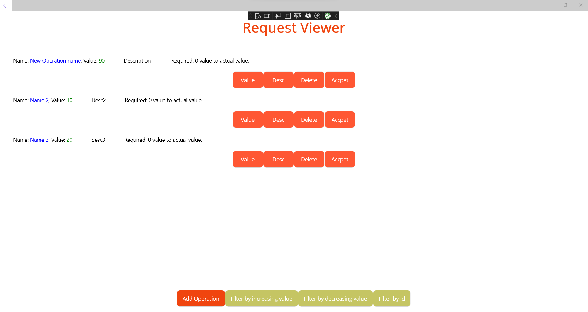

This week I'm working on an upgrade to last week's task. My new task is to: As an UNDAC Operational Team Leader, I want to raise a request for additional resources so that I can correct any errors. I interpreted this task as to create a new parametter called request for people to ask on another page for a request and then requests can be accepted or declined. On another page, we can update the value of the request and on the main page, the same used in the last issue we can acccept the value, thus automatically updating the new value, either negative or positive.
The class model here is simply updated to fit the new requested value and a description for the request.
using Microsoft.Maui.Controls;
using SQLite;
namespace UNDAC_App.Models
{
public class Operation
{
[PrimaryKey, AutoIncrement]
public int Id { get; set; }
public string Name { get; set; }
public int Value { get; set; }
public string Description { get; set; }
public int ValueRequest { get; set; }
public string ValueRequestText { get { return "Required: " + ValueRequest + " value to actual value."; } }
}
}
Now creating an operation also sets the requested value to zero, this lets the user not make mistake by authorising a non existing request.
public void AddOperation(string name, int value, string description)
{
var newOp = new Operation { Name = name, Value = value, Description = description, ValueRequest = 0 };
connection.Insert(newOp);
}
Once the Requested value has been set, to add it we have to check once again if the value is in the threshold defined last week.
private async void AcceptRequest(object sender, EventArgs e)
{
var button = sender as Button;
var op = button?.CommandParameter as Operation;
op.Value += op.ValueRequest;
if (op.Value < 1)
{
op.Value = 1;
}
else if (op.Value > 100)
{
op.Value = 100;
}
}
I have modified the GUI to showcase more operations at a time by putting every non-listed button on the same row.
<StackLayout Orientation="Horizontal" HorizontalOptions="CenterAndExpand" VerticalOptions="End">
<Button Text="Add Operation" Clicked="AddOp" BackgroundColor="#f0450f" TextColor="White" HeightRequest="40" Margin="0,16,0,0" />
<Button Text="Filter by increasing value" Clicked="SortByIncreasingValue" BackgroundColor="#c5c563" TextColor="White" HeightRequest="40" Margin="0,16,0,0" />
<Button Text="Filter by decreasing value" Clicked="SortByDecreasingValue" BackgroundColor="#c5c563" TextColor="White" HeightRequest="40" Margin="0,16,0,0" />
<Button Text="Filter by Id " Clicked="SortById" BackgroundColor="#c5c563" TextColor="White" HeightRequest="40" Margin="0,16,0,0" />
</StackLayout>
Here's the updated GUI, which is in my opinion more comfortable for the user since there is more space for the items to show on screen. In my opinion the GUI is as important almost as important as the specifications since it makes working with your app more efficient, which is a factor for deciding between 2 apps.

Link to the code review done for my code
There is still the same issue as last time, I could not find a solution to it. Also I had a big issue which could not let me transfere the database of the operations to other pages.
It is the first task I cannot pursue to the end in this module. I've learnt c# through this module and I have met my limit for now. I think I need to restart my learning and understanding of the language from start if I want to perform better in the futur.